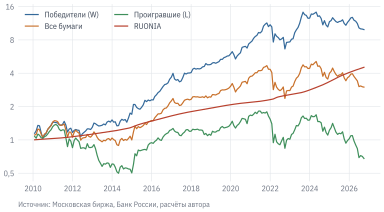

Купить акции, которые больше всего выросли за последний год, и продать те, что сильнее всего упали. Правило выглядит наивным: оно противоречит совету «покупай дёшево, продавай дорого» и, казалось бы, гипотезе эффективного рынка, по которой прошлые цены не помогают предсказывать будущие. Тем не менее это одна из самых устойчивых закономерностей в финансах. Jegadeesh и Titman (1993 г.) обнаружили её на американских акциях 1965–1989 гг., позднее её нашли на рынках акций почти всех стран, в облигациях, валютах и товарах (Asness и др. 2013 г.). В главе 12 моментум оказался единственным из факторов российского рынка, премия которого статистически отличалась от нуля.
В этой главе мы превратим фактор из главы 12 в торговое правило и посмотрим, что от него остаётся, когда в расчёт входят ликвидность, снятые с торгов бумаги, издержки и запрет на короткие продажи. Мы увидим и главную опасность моментума – редкие, но очень глубокие провалы – и простой способ сделать их мельче.
УведомлениеВ этой главе
Строим портфели победителей и проигравших на российском рынке и измеряем премию за моментум.
Проверяем, как результат зависит от окна формирования, срока удержания и пропуска последнего месяца.
Разбираем крахи моментума 2009 и 2015 гг. и их связь с разворотом рынка.
Учитываем ликвидность, делистинги, оборот и издержки; сравниваем стратегию «только покупка» с рынком.
Добавляем трендовый фильтр с выходом в деньги и таргетирование волатильности.
Проверяем выбор параметров на новых данных.
Данные:stocks.parquet, indexes.parquet, ruonia.parquet (см. данные книги). Нужно знать: доходность и коэффициент Шарпа (глава 4); факторные модели (глава 12, раздел 12.6); временная схема бэктеста и проблема перебора параметров (глава 15).
16.1 Откуда берётся моментум
Кросс-секционный моментум – сравнение бумаг друг с другом: в конце каждого месяца акции ранжируют по доходности за прошлые месяцы, покупают лучших (победителей, winners) и продают худших (проигравших, losers). Важно, что речь идёт об относительной доходности. Если упал весь рынок, победителями будут бумаги, которые упали меньше других. Портфель «победители минус проигравшие» (W − L, у Кархарта – WML) не требует собственного капитала: покупка оплачивается деньгами от короткой продажи. Поэтому его доходность – это премия, а не доходность вложений. Это идеализация: фактор считается так, будто короткая продажа бесплатна. На российском рынке она обходится дорого – брокер ежедневно берёт плату за заём бумаг, и при высоких ставках она может составлять несколько процентов годовых и больше. Поэтому стратегии с короткими продажами на практике выглядят заметно хуже, чем на бумаге, и часто уступают стратегиям «только покупка» (подробнее – в разделе 16.3).
Объяснений у моментума два, и спор между ними не закончен.
Поведенческое. Инвесторы медленно учитывают новую информацию. Хорошие новости о компании отражаются в цене не сразу, и цена продолжает расти ещё несколько месяцев (Hong и Stein 1999 г.). Этому помогает эффект диспозиции: частные инвесторы охотно продают выросшие бумаги, фиксируя прибыль, и держат упавшие, не желая признавать убыток. Продажи сдерживают рост победителей, ожидание – падение проигравших, и цены приходят к справедливому уровню с опозданием (Grinblatt и Han 2005 г.).
Рисковое. Победители и проигравшие различаются чувствительностью к общим рискам, и премия – компенсация за эти риски. Самый наглядный аргумент – редкие, но очень глубокие провалы моментума, которые мы увидим в разделе 16.3. Инвестор, который держит W − L, по сути продаёт страховку от резкого разворота рынка.
Для практики важно, что оба объяснения предсказывают временный характер эффекта: через год-два преимущество победителей исчезает. Поэтому портфель приходится часто пересматривать, а значит, платить за сделки.
16.2 Моментум на российском рынке
16.2.1 Правило
Зафиксируем правило так, чтобы в нём не было места выбору задним числом.
Сигнал – рост полной доходности (adj_close) с конца месяца \(t-12\) до конца месяца \(t-1\): одиннадцать месяцев с пропуском последнего. Так строят фактор моментума Фама и Френч, и так мы строили WML в главе 12. Последний месяц пропускают, потому что на американском рынке месячные доходности слегка разворачиваются; на российском это не так, к этому мы ещё вернёмся.
Выборка. В конце месяца \(t\) берём бумаги, у которых есть цена на эту дату и сигнал. Исключаем 20% наименее ликвидных по среднему обороту за три месяца, закончившихся в месяце \(t-1\). Сортировку проводим, только если в выборке не меньше 24 бумаг.
Портфели. Треть бумаг с наибольшим сигналом – победители (W), треть с наименьшим – проигравшие (L). Веса внутри портфеля равные. Выборка слишком мала для деления на децили, как у Jegadeesh и Titman (1993 г.): в каждом портфеле было бы по 5–7 бумаг.
Время. Все признаки известны на конец месяца \(t-1\), сделка – на закрытии последнего торгового дня месяца \(t\), доход – за месяц \(t+1\). Пропуск месяца в сигнале здесь удобен и технически: решение можно принять заранее и спокойно исполнить на закрытии. Без пропуска сигнал зависел бы от той же цены закрытия, по которой совершается сделка (раздел 15.2).
Снятые с торгов бумаги. При отсутствии новых котировок сохраняем последнюю оценку стоимости позиции. Её вес не распределяем между другими бумагами задним числом. При возобновлении торгов учитываем изменение относительно последней цены. Это оценочная конвенция для исследования: она не моделирует фактическую продажу при приостановке торгов и может завышать стоимость делистингованной бумаги.
import numpy as npimport pandas as pdimport matplotlib.pyplot as pltfrom qf import data, plotstocks = data.load_stocks(columns=["adj_close", "value_rub"])def wide(col): w = stocks.pivot(index="date", columns="ticker", values=col) w.index = w.index.astype("datetime64[ns]") # даты котировок хранятся с точностью до мсreturn wdaily = wide("adj_close")adj = daily.resample("ME").last() # последняя известная цена месяцаavailable = daily.resample("ME").agg(lambda x: x.iloc[-1]).notna() # котировка именно в последний деньmarks = daily.ffill().resample("ME").last() # оценка уже купленных позицийret = marks.pct_change(fill_method=None) # доходность за месяцliq = wide("value_rub").resample("ME").sum().rolling(3).mean().shift(1) # оборот до t−1mcftr = data.load_index("MCFTR").set_index("date")["close"]mcftr.index = mcftr.index.astype("datetime64[ns]")mkt = mcftr.resample("ME").last().pct_change()ru = data.load_ruonia().set_index("date")["rate"] /100ru = ru.reindex(pd.date_range(ru.index.min(), daily.index.max())).ffill()rf = (1+ ru /365).resample("ME").prod() -1# RUONIA за месяцrf.index = rf.index.astype("datetime64[ns]")def momentum(J=12, skip=1):"""Рост цены с конца месяца t−J до конца месяца t−skip."""return adj.shift(skip) / adj.shift(J) -1def sort_portfolios(signal, q=1/3, drop_liq=0.2, min_n=24):"""Равные веса победителей (W) и проигравших (L) на конец каждого месяца.""" ok = signal.notna() & available & liq.notna() ok &= liq.where(ok).rank(axis=1, pct=True) > drop_liq # без наименее ликвидных rank = signal.where(ok).rank(axis=1, pct=True) enough = ok.sum(axis=1) >= min_n W = (rank >1- q).mul(enough, axis=0).astype(float) L = (rank <= q).mul(enough, axis=0).astype(float)return W.div(W.sum(axis=1), axis=0).fillna(0), L.div(L.sum(axis=1), axis=0).fillna(0)def hold(weights, K=1):"""Доходность за месяц t+1 портфеля, сформированного в конце месяца t. При K > 1 – среднее K последних портфелей (перекрывающиеся портфели).""" cohorts = []for age inrange(1, K +1): w = weights.shift(age).copy()# Внутри каждой когорты число акций постоянно: веса дрейфуют с ценами.for lag inrange(1, age): w *=1+ ret.shift(lag).fillna(0) total = w.sum(axis=1) w = w.div(total.where(total >0), axis=0) cohorts.append((w * ret.fillna(0)).sum(axis=1).where(total >0))# Равные доли капитала между когортами; старые акции внутри них не перевзвешиваем.return pd.concat(cohorts, axis=1).mean(axis=1, skipna=False).dropna()W, L = sort_portfolios(momentum())wml = (hold(W) - hold(L)).dropna().loc["2009":]
Код
library(dplyr)daily_r<-qf_load_stocks(start ="2025-01-01")last_day<-max(daily_r$date)m<-daily_r|>arrange(ticker, date)|>mutate(month =as.Date(paste0(format(date, "%Y-%m"), "-01")))|>group_by(ticker, month)|>summarise(price =last(adj_close), quote_date =last(date), turnover =sum(value_rub, na.rm =TRUE), .groups ="drop_last")|>tidyr::complete(month =seq(min(month), as.Date(format(last_day, "%Y-%m-01")), by ="month"))|>arrange(month, .by_group =TRUE)|>mutate(mom =lag(price, 1)/lag(price, 12)-1, liq =(lag(turnover, 1)+lag(turnover, 2)+lag(turnover, 3))/3)|>ungroup()# Портфели на конец последнего месяцаm|>filter(month==max(month), quote_date==last_day, !is.na(mom), !is.na(liq))|>filter(rank(liq)/n()>0.2)|>mutate(r =rank(mom)/n(), group =case_when(r>2/3~"W", r<=1/3~"L", TRUE~"M"))|>filter(group!="M")|>arrange(desc(mom))|>select(ticker, group, mom)#> # A tibble: 40 x 3#> ticker group mom#> <chr> <chr> <dbl>#> 1 CBOM W 0.365 #> 2 SFIN W 0.328 #> 3 UGLD W 0.238 #> 4 CNRU W 0.171 #> 5 MDMG W 0.147 #> 6 SBERP W 0.108 #> 7 SBER W 0.105 #> 8 SNGSP W 0.0894#> 9 MTSS W 0.0826#> 10 PIKK W 0.0746#> # i 30 more rows
Функция hold с параметром K понадобится позже: она позволяет держать портфель несколько месяцев. В R показан только расчёт состава портфелей на последнюю дату. Сетка месяцев дополнена пропусками, поэтому лаг на 12 строк действительно равен 12 месяцам; для включения бумаги нужна котировка на последнюю торговую дату снимка.
16.2.2 Результат
Победители и проигравшие формируются с конца 2008 г.: раньше в снимке меньше 24 бумаг с годовой историей. В каждом портфеле от 9 до 21 акций. Позиция оставалась без котировки на последнюю торговую дату месяца 18 раз. Безрисковая ставка RUONIA доступна с 2010 г., поэтому сравнение с ней начинается оттуда.
СоветСначала предскажите
В главе 12 премия за моментум, рассчитанная по портфелям, взвешенным капитализацией, составила около 15% в год. Победители и проигравшие здесь взвешены поровну. Какая часть премии придётся на победителей, а какая – на проигравших? Обгоняют ли победители денежный рынок?
Таблица 16.1: Портфели моментума, 2010–2026 гг.: доходность сверх RUONIA (для W − L – сама разность), волатильность и риск. «Все бумаги» – равные веса всей выборки
Победители (W)
Проигравшие (L)
W − L
Все бумаги
MCFTR
Доходность, % год.
7,1
−8,0
15,1
−0,0
1,9
Волатильность, % год.
21,6
25,8
16,3
21,8
19,9
Шарп
0,33
−0,31
0,92
−0,00
0,09
t-статистика
1,33
−1,26
3,77
−0,01
0,38
Макс. просадка, %
−41,7
−63,7
−37,4
−49,5
−51,3
С 2010 г. победители приносили в среднем 7,1% в год сверх RUONIA, проигравшие – −8,0%. Разность W − L – 15,1% в год с t-статистикой 3,8: это близко к результату главы 12, хотя там портфели строились иначе. Премия делится между сторонами почти поровну. Выигрыш на проигравших доступен только тому, кто может продавать их без покрытия, – к этому вопросу мы вернёмся в разделе 16.4.
Полезно сравнить с колонкой «Все бумаги». Равновзвешенный портфель той же выборки за эти годы не заработал больше денежного рынка (−0,0% в год), MCFTR – немногим больше (1,9%). На этом фоне 7,1% у победителей заметны, но t-статистика их избыточной доходности – всего 1,3. Волатильность в 20–25% в год скрывает и большую разницу средних. У W − L волатильность ниже (16%): общие колебания рынка в разности почти взаимно уничтожаются.
Код
fig, ax = plt.subplots()for name, x in [("Победители (W)", hold(W)), ("Все бумаги", hold(ALL)), ("Проигравшие (L)", hold(L)), ("RUONIA", rf)]: ax.plot((1+ x.loc[period]).cumprod(), label=name)ax.set_yscale("log")ax.minorticks_off()ax.set_yticks([0.5, 1, 2, 4, 8, 16], labels=["0,5", "1", "2", "4", "8", "16"])ax.legend(ncol=2)plot.source(ax, "Московская биржа, Банк России, расчёты автора")plt.show()

Рисунок 16.1: Рост 1 руб. в портфелях победителей и проигравших, в равновзвешенном портфеле всех бумаг выборки и на денежном рынке (логарифмическая шкала)
16.2.3 Окно формирования и срок удержания
У правила два главных параметра: окно \(J\), за которое измеряется рост, и срок \(K\), на который держится портфель. Jegadeesh и Titman (1993 г.) держали портфели \(K\) месяцев, а каждый месяц формировали новый. В любой момент инвестор владеет \(K\) перекрывающимися портфелями, сформированными в разные месяцы, по \(1/K\) капитала в каждом. Внутри когорты акции не перевзвешиваются: их веса меняются вместе с ценами. В расчёте ежемесячно выравниваем капитал между когортами, поэтому оборот включает не только замену самой старой когорты. Увеличение \(K\) сокращает частоту замены её состава, но не гарантирует уменьшения общего оборота ровно в \(K\) раз.
Код
grid = []for J in [3, 6, 9, 12]: Wj, Lj = sort_portfolios(momentum(J))for K in [1, 3, 6, 12]: d = (hold(Wj, K) - hold(Lj, K)).reindex(period)assert d.notna().all() # все варианты сравниваем на одних месяцах grid.append({"J": J, "K": K, "mean": d.mean() *12,"t": d.mean() / d.std() * np.sqrt(len(d)),"sr_in": d.loc[:"2017"].mean() / d.loc[:"2017"].std() * np.sqrt(12),"sr_out": d.loc["2018":].mean() / d.loc["2018":].std() * np.sqrt(12)})grid = pd.DataFrame(grid)cells = grid.apply(lambda r: f"{fmt(r['mean'] *100)} ({fmt(r['t'])})", axis=1)table = grid.assign(cell=cells).pivot(index="J", columns="K", values="cell")table.index = [f"J = {j}"for j in table.index]table.columns = [f"K = {k}"for k in table.columns]table.style
Таблица 16.2: Премия W − L, % годовых (в скобках – t-статистика), 2010–2026 гг. Строки – окно формирования J (последний месяц пропускается), столбцы – срок удержания K, мес.
K = 1
K = 3
K = 6
K = 12
J = 3
9,6 (2,6)
8,2 (2,7)
7,4 (3,2)
6,1 (3,5)
J = 6
12,6 (3,2)
11,9 (3,3)
11,7 (3,9)
7,6 (3,0)
J = 9
15,5 (3,9)
13,7 (3,7)
11,5 (3,4)
6,3 (2,1)
J = 12
15,1 (3,8)
12,2 (3,2)
9,3 (2,6)
5,8 (1,8)
Все варианты дают положительную премию, но её величина заметно меняется. При удержании в один месяц короткое окно \(J = 3\) даёт 9,6% в год, окна 6 и 12 месяцев – 12,6% и 15,1%. При длинном удержании премия угасает: портфель, сформированный по росту за год и удерживаемый ещё год, приносит лишь 5,8%. Это согласуется с временным характером эффекта: через несколько месяцев после формирования победители перестают обгонять проигравших. Все варианты сравниваем на общем периоде 2010–2026 гг., когда уже сформированы все 12 когорт для самого длинного удержания. Иначе длинный срок мог бы выглядеть лучше просто потому, что его история начинается после краха 2009 г. Сам этот крах разберём в следующем разделе.
Отдельный вопрос – пропуск последнего месяца. На американских данных доходность прошедшего месяца слегка разворачивается (Jegadeesh и Titman 1993 г.), и без пропуска премия моментума ниже. На российских данных разницы почти нет: без пропуска премия за 2009–2026 гг. – 10,8% в год (t = 2,2), с пропуском – 11,0% (t = 2,3). Более того, сортировка только по доходности последнего месяца даёт не разворот, а продолжение: 12,8% в год (t = 3,0). К этому результату нужно относиться осторожно. Сигнал по последнему месяцу зависит от цены закрытия, по которой совершается сделка, а такую сделку в реальности исполнить нельзя (раздел 15.2). Проверить, сохраняется ли эффект при сделке на следующий день, предлагается в упражнении 8.
Рисунок 16.2: Доходность W − L по годам. 2026 г. – январь–сентябрь
Премия моментума распределена во времени очень неравномерно. Из 18 лет наблюдений W − L потерял деньги в 3, но два из этих лет перекрывают несколько хороших: в 2009 г. портфель потерял 52%, в 2015 г. – 34%. Распределение месячных доходностей сильно скошено влево: худший месяц выборки – −37%, тогда как лучший – 11%.
Код
crashes.style.format(fmt)
Таблица 16.3: Пять худших месяцев W − L и поведение рынка
W − L, %
MCFTR в этот месяц, %
MCFTR за 12 мес. до, %
04.2009
−37,0
19,1
−51,0
09.2009
−30,0
9,6
−16,6
02.2015
−24,9
6,8
19,7
04.2015
−15,2
3,9
25,0
01.2012
−11,4
8,0
−14,5
В таблице 16.3 видна общая черта: все худшие месяцы моментума – месяцы роста рынка. Апрель и сентябрь 2009 г. пришлись на восстановление после обвала 2008 г., февраль 2015 г. – на отскок после валютного кризиса декабря 2014 г. Механизм описали Daniel и Moskowitz (2016 г.). После долгого падения рынка в проигравших оказываются бумаги, которые падали сильнее всех, – как правило, с высокой бетой и большим долгом. Победители – защитные бумаги с низкой бетой. Портфель W − L в этот момент имеет заметно отрицательную бету: он фактически сделал ставку на продолжение падения. Когда рынок разворачивается, проигравшие растут быстрее всех. В апреле 2009 г. акции из портфеля проигравших выросли в среднем на 54%; лидерами были MSNG (82%), TRMK (70%) и SVAV (67%). В феврале 2015 г. проигравшие выросли на 25%, а победители не изменились (−0,1%); сильнее всего выросли MTLR, RSTI и FEES.
Регрессия месячной доходности W − L на доходность MCFTR подтверждает картину. Бета W − L по всей выборке – −0,27. В 60 месяцев, когда рынок за предыдущий год упал, она – −0,41, в остальные месяцы – −0,11. Чем глубже падение, тем сильнее моментум сам превращается в короткую позицию по рынку, и тем больнее для него разворот.
2022 г. – интересное исключение. Рынок упал более чем на треть, но W − L закончил год около нуля (0,4%). Одно из возможных объяснений: обвал февраля был внезапным, а не постепенным, а восстановление в 2023 г. – растянутым, без резкого разворота, который бьёт по моментуму.
Важное уведомлениеОсобенность российского рынка: короткие продажи
Портфель W − L требует коротких продаж проигравших. На Московской бирже короткие продажи возможны только по бумагам из списка брокера, за заём бумаг взимается плата, а в отдельные периоды, например весной 2022 г., Банк России временно их запрещал. Кроме того, проигравшие – часто бумаги с самыми высокими издержками займа. Расчёт W − L эти расходы не учитывает. Если бы заём проигравших стоил, например, 10% годовых, премия W − L сократилась бы примерно на 10 п. п. – с 15,1% до 5,1% в год, то есть стала бы меньше избыточной доходности одних победителей (7,1% до издержек). Поэтому W − L – прежде всего фактор, инструмент измерения и анализа, а стратегия, доступная большинству инвесторов, – покупка победителей. Её мы и будем рассматривать дальше.
16.4 Ликвидность, делистинги и издержки
Академический фактор и торговая стратегия различаются в деталях, которые легко пропустить. Три из них особенно важны для моментума.
Ликвидность. Малоликвидные бумаги делают бэктест красивее, чем он может быть на деле. Их цены закрытия часто отражают одну-две случайные сделки, а купить их по такой цене в нужном объёме нельзя. Lesmond и др. (2004 г.) показали, что основная часть премии моментума на американском рынке приходится на бумаги с высокими издержками торговли. На российских данных картина обратная.
Без фильтра ликвидности премия W − L за 2009–2026 гг. – 9,8% в год (t = 1,9). Если оставить только более ликвидную половину бумаг, она вырастает до 15,4% (t = 2,8). На российском рынке моментум сильнее в крупных ликвидных бумагах. Одно из возможных объяснений – активность частных инвесторов. Они торгуют прежде всего ликвидными бумагами и подвержены эффекту диспозиции. Это объяснение мы не проверяли.
Делистинги. Бумаги, снятые с торгов, – источник ошибки выжившего (раздел 3.4). Если бы снимок содержал только торгующиеся сегодня акции, все провалившиеся компании выпали бы из прошлых портфелей, и проигравшие выглядели бы лучше, чем были. Снимок книги включает и снятые с торгов бумаги, а функция hold сохраняет последнюю оценку позиции без перераспределения её капитала. Это не цена гарантированного выхода. При очередном формировании недоступная бумага уже не входит в новый портфель, но реальный инвестор может оставаться с заблокированной позицией. Поэтому показанные доходности и издержки – условный исследовательский расчёт; для исполнимого бэктеста нужны события приостановки, условия выкупа, даты выплат и отдельный учёт заблокированного капитала.
Оборот и издержки. Каждый месяц часть победителей перестаёт быть победителями. Оборот считаем как долю капитала, которую нужно переложить, с учётом того, что за месяц веса бумаг сдвигаются вместе с ценами.
Код
def turnover(weights):"""Доля капитала, перекладываемая в конце месяца t, с учётом дрейфа весов за месяц.""" grown = weights.shift(1).fillna(0) * (1+ ret.fillna(0)) drifted = grown.div(grown.sum(axis=1), axis=0).fillna(0)return (weights - drifted).abs().sum(axis=1)def net_of_costs(weights, cost):"""Доходность за месяц t+1 за вычетом издержек cost на рубль сделки (с каждой стороны).""" gross = hold(weights)return gross - cost * turnover(weights).shift(1).reindex(gross.index)to_w = turnover(W).loc[period]
Таблица 16.4: Портфель победителей при разных издержках на рубль сделки, 2010–2026 гг.: доходность сверх RUONIA
0,0%
0,1%
0,3%
0,5%
Все бумаги
MCFTR
Доходность, % год.
7,1
6,6
5,5
4,5
−0,0
1,9
Волатильность, % год.
21,6
21,6
21,6
21,6
21,8
19,9
Шарп
0,33
0,30
0,25
0,21
−0,00
0,09
t-статистика
1,33
1,24
1,04
0,85
−0,01
0,38
Макс. просадка, %
−41,7
−42,0
−42,6
−43,1
−49,5
−51,3
Средний месячный оборот портфеля победителей – 43% капитала, или около 5,2 капитала в год. При издержках 0,3% на рубль сделки (комиссия брокера и биржи плюс половина спреда для бумаг второго эшелона) это стоит примерно 1,5% доходности в год, и избыточная доходность снижается до 5,5%. Преимущество перед равновзвешенным портфелем той же выборки исчезает при издержках около 1,4% на рубль сделки. Для крупного инвестора к этому добавляется влияние на цену: заявки на десятки миллионов рублей в бумагах второго эшелона сдвигают котировки.
Главный вывод таблицы, однако, не про издержки. Даже без них t-статистика избыточной доходности победителей невелика, а при издержках 0,3% – 1,0. Шестнадцать лет месячных данных не позволяют уверенно отличить такую стратегию от удачи. Статистически значима премия W − L, где рыночный риск взаимно погашается. У портфеля победителей этот риск остаётся и заглушает сигнал.
16.4.1 Предел скорости и буфер
Сколько можно тратить на сделки? Carver (2019 г.) предлагает измерять издержки в тех же единицах, что и результат, – в долях риска. Годовые издержки, делённые на годовую волатильность стратегии, показывают, сколько единиц коэффициента Шарпа они отнимают. Его практическое правило – предел скорости: издержки не должны превышать трети ожидаемого коэффициента Шарпа до издержек. Треть – с запасом на то, что ожидаемая доходность оценена с большой ошибкой: если реальная окажется вдвое ниже ожидаемой, после издержек всё равно что-то останется.
Для портфеля победителей коэффициент Шарпа до издержек – 0,33, значит, предел скорости – около 0,11. При издержках 0,3% на рубль сделки стратегия тратит 0,07 единицы Шарпа в год – в пределах правила, но это уже около двух третей допустимого. При 0,5% – 0,12, то есть предел превышен. Для частного инвестора, который торгует бумагами второго эшелона, ежемесячная ребалансировка по моментуму находится на грани разумного.
Как снизить оборот? Карвер использует буфер – зону вокруг целевой позиции, внутри которой сделка не совершается (Carver 2023 г., стратегия 8). Для портфеля моментума буфер выглядит так: новые бумаги покупаем, только если они попали в верхнюю треть, а купленные держим, пока они остаются в верхней половине. Бумага, которая опустилась с 70-го на 60-й процентиль, не продаётся: её позиция почти так же хороша, а сделка стоит денег.
Код
def sort_with_buffer(signal, q=1/3, keep=0.5, drop_liq=0.2, min_n=24):"""Победители с буфером: вход – в верхней доле q, выход – при выпадении из верхней доли keep.""" ok = signal.notna() & available & liq.notna() ok &= liq.where(ok).rank(axis=1, pct=True) > drop_liq rank = signal.where(ok).rank(axis=1, pct=True) enough = ok.sum(axis=1) >= min_n held = pd.Series(False, index=adj.columns) rows = []for t in adj.index: # решение зависит от прошлого портфеля – нужен цикл held = ((rank.loc[t] >1- q) | (held & (rank.loc[t] >1- keep))) & enough.loc[t] rows.append(held.astype(float)) Wb = pd.DataFrame(rows, index=adj.index)return Wb.div(Wb.sum(axis=1), axis=0).fillna(0)W_buf = sort_with_buffer(momentum())
Таблица 16.5: Портфель победителей без буфера и с буфером, 2010–2026 гг.: оборот и доходность сверх RUONIA, % годовых
Оборот, капиталов в год
Бумаг в портфеле
До издержек
Издержки 0,3%
Издержки 0,5%
Без буфера
5,2
17,3
7,1
5,5
4,5
С буфером
3,2
21,5
6,2
5,2
4,5
Буфер сокращает оборот с 5,2 до 3,2 капитала в год. Но на российских данных он обходится дорого: доходность до издержек падает с 7,1% до 6,2%. Причина видна в таблице 16.2: преимущество победителей быстро угасает, и бумага, которая сползла из верхней трети, уже заметно хуже новых победителей. Буфер окупается, только если сделка стоит дороже 0,49% на рубль. Для медленных сигналов, которые разбирает Карвер, буфер почти бесплатен; для быстро угасающего моментума это не так. Как и любой приём, его нужно проверять на своих данных, а не переносить вслепую.
16.5 Трендовый фильтр и деньги
Кросс-секционный моментум сравнивает бумаги между собой, но ничего не говорит о направлении рынка. В 2022 г. победители упали меньше проигравших, но всё равно упали. Временной моментум (time-series momentum) сравнивает актив с его собственным прошлым: держать, если за последний год он заработал больше денежного рынка, и выходить в деньги, если меньше (Moskowitz и др. 2012 г.). В главе 15 мы проверяли родственное правило – скользящую среднюю за 200 дней – на индексе MCFTR. Здесь применим временной моментум как фильтр к портфелю победителей.
Правило: если на конец месяца \(t-1\) доходность MCFTR за 12 месяцев выше накопленной RUONIA за тот же срок, в конце месяца \(t\) покупаем победителей; иначе держим деньги под RUONIA. Выход в деньги и возврат на рынок проходят через функцию turnover и оплачиваются по общему тарифу 0,3%.
Таблица 16.6: Трендовый фильтр для портфеля победителей и для индекса, 2010–2026 гг.: доходность сверх RUONIA, издержки 0,3%
Победители
Победители + фильтр
MCFTR
MCFTR + фильтр
Доходность, % год.
5,5
5,0
1,9
0,9
Волатильность, % год.
21,6
17,6
19,9
15,4
Шарп
0,25
0,28
0,09
0,06
t-статистика
1,04
1,15
0,38
0,23
Макс. просадка, %
−42,6
−33,1
−51,3
−39,6
Фильтр держал портфель в акциях 61% времени и переключался 27 раз за шестнадцать лет. Он сделал то, чего от него ждут: максимальная просадка уменьшилась с 43% до 33%, в 2022 г. потери сократились с 31% до 11%. Но за это пришлось заплатить. Избыточная доходность упала с 5,5% до 5,0% в год, у индекса – с 1,9% до 0,9%. Причина видна в 2023 г.: рынок вырос после падения 2022 г., а фильтр, смотрящий на прошлый год, вернул портфель в акции с опозданием (24% против 61% без фильтра).
Результат согласуется с выводами главы 15: трендовый фильтр – инструмент управления риском, а не источник доходности. Он полезен инвестору, для которого глубокая просадка неприемлема, в этой выборке он снизил среднюю доходность, одновременно улучшив коэффициент Шарпа портфеля победителей. Поэтому оценка пользы зависит от выбранного критерия. Высокие ставки делают деньги привлекательной альтернативой, но они же поднимают планку: чтобы фильтр вернул портфель в акции, рынок должен за год обогнать RUONIA, а при ставке 15–20% это происходит реже.
Похожий вывод делает Carver (2017 г.) для распределения денег между акциями и облигациями США. Он сравнивает относительный моментум, при котором портфель всегда полностью вложен и лишь перераспределяется в пользу растущих активов, с абсолютным, при котором падающие активы заменяются деньгами. Абсолютный вариант немного повышает коэффициент Шарпа, потому что снижает риск, но уменьшает среднюю геометрическую доходность, и Карвер выбирает относительный. Трендовый фильтр в этой главе – вариант абсолютного моментума, и на российских данных он ведёт себя похоже.
16.6 Таргетирование волатильности
Провалы моментума предсказать трудно, а вот периоды высокой волатильности – намного легче: волатильность кластеризуется (глава 8). Худшие месяцы W − L пришлись на периоды, когда портфель уже несколько месяцев сильно колебался. Barroso и Santa-Clara (2015 г.) предложили масштабировать позицию так, чтобы ожидаемая волатильность оставалась постоянной:
где \(\hat\sigma_t\) – реализованная волатильность дневных доходностей W − L за последние 126 торговых дней (полгода), рассчитанная на конец месяца \(t\), а \(\sigma_{\text{цель}}\) – целевая волатильность. Возьмём 15% в год и ограничим плечо двумя. Оценка известна на конец месяца \(t\) и применяется к портфелю, который держится в месяце \(t+1\).
Код
dr = daily.ffill().pct_change(fill_method=None)def daily_returns(weights):"""Дневные доходности портфеля: веса с конца месяца t действуют со следующего дня.""" w = weights.set_axis(weights.index + pd.Timedelta(days=1)).reindex(dr.index, method="ffill") base = marks.set_axis(marks.index + pd.Timedelta(days=1)).reindex(dr.index, method="ffill") before = w * daily.ffill().shift(1) / base # капитал по вчерашним ценамreturn (before * dr.fillna(0)).sum(axis=1) / before.sum(axis=1).replace(0, np.nan)wml_d = (daily_returns(W) - daily_returns(L)).dropna()sigma = (wml_d.rolling(126, min_periods=60).std() * np.sqrt(252)).resample("ME").last()lev = (0.15/ sigma).clip(upper=2).shift(1).reindex(wml.index).dropna()wml_scaled = lev * wml.loc[lev.index]vol_start =str(lev.index[0].date())
Дневная доходность учитывает дрейф весов внутри месяца и ту же оценку отсутствующих котировок, что и hold. Первые 60 торговых дней уходят на накопление истории; сравнение начинается с месяца, заканчивающегося 31.05.2009. Прогноз риска применяется только в следующем месяце.
Таблица 16.7: Таргетирование волатильности W − L на общем периоде с доступной оценкой риска
W − L
W − L, волатильность 15%
Доходность, % год.
12,8
18,1
Волатильность, % год.
17,9
17,1
Шарп
0,71
1,06
t-статистика
2,97
4,42
Макс. просадка, %
−37,4
−20,0
Асимметрия
−1,83
−0,19
Эффект сильный. Коэффициент Шарпа вырос с 0,71 до 1,06, максимальная просадка сократилась с 37% до 20%, асимметрия – с −1,8 почти до нуля (−0,2). Перед провалом февраля 2015 г. волатильность уже была высокой, и масштаб позиции составлял 0,44. Результат месяца – −11% вместо −25%. Апрельский крах 2009 г. находится до начала общего периода сравнения; по нему нельзя судить об эффективности этой настройки. В спокойные периоды позиция, наоборот, увеличивается; в среднем плечо – 1,11.
Почему это работает? Масштабирование не предсказывает доходность. Оно использует то, что волатильность предсказуема, а ожидаемая доходность в бурные периоды растёт меньше, чем риск. Значит, отношение доходности к риску в такие периоды хуже, и разумно держать меньше (Moreira и Muir 2017 г.). Для моментума этот эффект особенно силён, потому что бурные периоды совпадают с опасными разворотами рынка. Carver (2017 г.) формулирует ту же мысль шире: средние доходности по историческим данным оцениваются с огромной ошибкой, а риск – намного точнее. Поэтому решения, опирающиеся на оценку риска, надёжнее решений, опирающихся на прогноз доходности.
Какую оценку волатильности брать? Окно в полгода, как у Barroso и Santa-Clara (2015 г.), медленно реагирует на новые шоки. Короткое окно реагирует быстро, но после затишья занижает риск, и позиция раздувается как раз перед кризисом. Carver (2023 г., стратегия 3) предлагает компромисс: смесь 70% быстрой экспоненциальной оценки (окно около 32 дней) и 30% её среднего за последние 10 лет. Долгосрочная часть тянет оценку к обычному уровню: волатильность кластеризуется в коротком периоде, но со временем возвращается к среднему (глава 8).
Код
fast = wml_d.ewm(span=32).std() * np.sqrt(252)blend =0.7* fast +0.3* fast.rolling(2520, min_periods=250).mean().fillna(fast)vt_period = lev.indexvol_estimates = {"Окно 126 дней": wml_d.rolling(126, min_periods=60).std() * np.sqrt(252),"Экспоненциальная, 32 дня": fast,"Смесь 70/30": blend}def scaled(sigma_daily, target=0.15, cap=2): lev = (target / sigma_daily.resample("ME").last()).clip(upper=cap).shift(1) lev = lev.reindex(wml.index).reindex(vt_period).dropna()return lev * wml.loc[lev.index], lev
Код
rows = {}for name, sig in vol_estimates.items(): x, lv = scaled(sig) st = stats(x) rows[name] = {"Шарп": st["Шарп"], "Макс. просадка, %": st["Макс. просадка, %"],"Среднее плечо": lv.mean(), "Изменение плеча за месяц": lv.diff().abs().mean()}vol_est = pd.DataFrame(rows).Tvol_est.style.format(fmt2).format(fmt, subset=["Макс. просадка, %"])
Таблица 16.8: W − L с таргетированием волатильности 15% при разных оценках волатильности на общем периоде
Шарп
Макс. просадка, %
Среднее плечо
Изменение плеча за месяц
Окно 126 дней
1,06
−20,0
1,11
0,08
Экспоненциальная, 32 дня
0,96
−24,4
1,19
0,22
Смесь 70/30
0,96
−24,4
1,07
0,14
Все три оценки дают сопоставимый результат, и любая намного лучше, чем без масштабирования: коэффициент Шарпа – от 0,96 до 1,06. Смесь по сравнению с быстрой оценкой почти не меняет Шарп (0,96 против 0,96), но плечо колеблется заметно меньше: в среднем на 0,14 в месяц против 0,22. Это и есть её главная цель у Карвера – меньше лишних сделок. Полугодовое окно на наших данных оказалось даже чуть лучше и ещё спокойнее (0,08), но разница в Шарпе в пределах шума. Учтите и ограничение: десятилетнее среднее требует длинной истории, а у нас она начинается в 2009 г., поэтому в первые годы долгосрочная часть оценки неполная.
У приёма есть ограничения. Плечо до двух означает заём денег или бумаг, а расчёт не учитывает ни стоимость заёмных средств, ни дополнительный оборот при изменении масштаба. Для портфеля победителей без плеча (масштаб не выше единицы, остаток – в деньгах, цель 20% годовых) эффект скромнее. Шарп растёт с 0,33 до 0,36, просадка сокращается с 42% до 28%, а в акциях в среднем находится 90% капитала.
16.7 Проверка на новых данных
В этой главе мы испытали много вариантов правила: шестнадцать сочетаний окна и срока удержания, три фильтра ликвидности, фильтр тренда, масштабирование. Глава 15 предупреждает: чем больше вариантов перебрано, тем вероятнее, что лучший из них выглядит хорошо случайно (раздел 15.5). Проведём простую проверку. Разделим общий период сравнения на две части: 2010–2017 и 2018–2026 гг. Если бы мы выбирали параметры в 2017 г., какой вариант оказался бы лучшим и что дальше?
Рисунок 16.4: Коэффициент Шарпа W − L для 16 сочетаний окна J и срока удержания K: 2010–2017 гг. (по горизонтали) и 2018–2026 гг. (по вертикали)
Картина поучительна в двух отношениях. Во-первых, лучший коэффициент Шарпа в 2010–2017 гг. – 0,74, у варианта J = 12, K = 1. Это результат выбора из шестнадцати правил, а не независимое свидетельство качества стратегии. Во-вторых, во втором периоде положительный Шарп у всех 16 вариантов, от 0,56 до 1,39. Лучший вариант первого периода показал 1,23 при медиане 1,19. Ранговая корреляция результатов двух периодов – 0,31.
Положительная премия сохраняется у разных правил, но их ранжирование меняется. Выбор победителя первой части выборки не гарантирует преимущество во второй. Это аргумент в пользу стандартного варианта или усреднения нескольких окон, а не поиска единственного оптимального. Это и есть практический смысл правила «сначала гипотеза, потом расчёт»: сигнал 12–1 был выбран до анализа, по литературе, и его результат не завышен перебором.
Если выбирать не нужно, можно не выбирать. Carver (2023 г., стратегия 9) не ищет лучшую скорость трендового сигнала, а усредняет прогнозы нескольких скоростей. Сделаем то же для моментума: каждый месяц ранжируем бумаги по росту за 3, 6, 9 и 12 месяцев и сортируем по среднему из четырёх рангов.
Код
ranks = [momentum(J).rank(axis=1, pct=True) for J in [3, 6, 9, 12]]combo = (sum(ranks) /len(ranks)).where(momentum(12).notna()) # та же выборка, что у J = 12W_combo, L_combo = sort_portfolios(combo)wml_combo = (hold(W_combo) - hold(L_combo)).dropna().loc["2009":]
Коэффициент Шарпа комбинированного сигнала за 2009–2026 гг. – 0,62 против 0,55 у одного окна в 12 месяцев; в 2009–2017 гг. – 0,19 против 0,26, в 2018–2026 гг. – 1,34 против 1,23. В первом периоде комбинированный сигнал хуже, во втором лучше, в целом выигрыш небольшой. Но получен он без всякого выбора параметров, и результат не зависит от того, угадали ли мы окно. Цена – оборот: короткие окна меняют состав портфеля чаще, и портфель победителей комбинированного сигнала обновляется на 6,8 капитала в год против 5,2.
УведомлениеЧто не сработало: эксперименты автора
В отдельном исследовательском проекте на тех же данных (45 самых ликвидных бумаг, 10 бумаг в портфеле, 2012–2026 гг.) автор проверил несколько популярных улучшений моментума. Критерии успеха фиксировались до расчёта.
Остаточный моментум(Blitz и др. 2011 г.): ранжирование по доходности, очищенной от рыночной беты. На американских данных он стабильнее обычного. Здесь разница коэффициентов Шарпа с обычным сигналом – +0,01 при p = 0,91, то есть эффекта нет.
Отраслевая очистка: ранжирование по доходности сверх отраслевого индекса. Результат хуже обычного моментума. Значительная часть российского моментума – отраслевая, и её удаление убирает сигнал, а не шум. Это согласуется с выводом Moskowitz и Grinblatt (1999 г.) о роли отраслей.
Аномалия низкой волатильности как отдельная стратегия не подтвердилась: в 2022 г. «спокойные» бумаги упали сильнее равновзвешенного портфеля.
Почти весь выигрыш сложных конструкций объяснялся двумя простыми надстройками: снижением риска в плохие периоды и доходом денежной позиции при высоких ставках. Отрицательный результат – тоже результат, и его стоит записывать так же тщательно, как положительный (глава 15).
Moskowitz, Tobias J., и Mark Grinblatt. 1999 г. «Do Industries Explain Momentum?»The Journal of Finance 54 (4): 1249–90.
Итоги
Кросс-секционный моментум – покупка недавних победителей и продажа проигравших. На российском рынке с 2010 г. премия W − L составила около 15% в год и статистически значима; она делится между победителями и проигравшими примерно поровну.
Премия угасает при удержании портфеля дольше полугода. Пропуск последнего месяца, обязательный на американских данных, на российских почти ничего не меняет.
Моментум подвержен редким глубоким крахам. Они случаются при резком развороте рынка после падения, когда портфель проигравших состоит из высокобетовых бумаг.
На российском рынке моментум сильнее в ликвидных бумагах. Оборот портфеля победителей – около пяти капиталов в год, и издержки 0,3% на сделку отнимают около полутора процентных пунктов доходности.
Портфель только из победителей несёт рыночный риск, и его преимущество перед рынком статистически неубедительно. Трендовый фильтр снижает просадки и среднюю доходность; у победителей коэффициент Шарпа при этом немного повышается.
Таргетирование волатильности повышает коэффициент Шарпа W − L с 0,71 до 1,06 и сокращает худшие потери на общем периоде сравнения. Оно использует предсказуемость волатильности; доходность предсказывать гораздо труднее.
Устойчив сам эффект, а не конкретные параметры: лучший вариант прошлого периода не стал лучшим в следующем. Вместо выбора одного окна можно усреднить несколько.
Издержки удобно измерять в единицах коэффициента Шарпа. По «пределу скорости» Карвера они не должны превышать трети ожидаемого Шарпа до издержек; у портфеля победителей при издержках 0,3% эта граница почти достигнута. Буфер снижает оборот, но для быстро угасающего моментума обходится дорого.
16.8 Упражнения
16.8.1 А. Понимание
Портфель W − L не требует собственного капитала. Что тогда означает его «доходность 15% в год»? Как превратить её в доходность реального инвестора?
Объясните, почему после долгого падения рынка бета портфеля W − L становится отрицательной. Какие бумаги в этот момент оказываются в проигравших?
Как срок удержания \(K > 1\) влияет на замену состава портфелей? Почему выравнивание капитала между когортами и дрейф весов не позволяют считать, что оборот уменьшается ровно в \(K\) раз?
Оборот портфеля – 40% в месяц, издержки – 0,3% на рубль сделки. Сколько стоят издержки в год? Как изменится ответ, если ребалансировать портфель раз в квартал?
Таргетирование волатильности повышает коэффициент Шарпа, хотя не предсказывает доходность. Объясните, как это возможно. При каком поведении ожидаемой доходности приём перестал бы работать?
16.8.2 Б. Практика на данных
Постройте W − L с весами, пропорциональными капитализации (поле market_cap), и сравните с равновзвешенным вариантом. Как изменятся премия и худшие месяцы? Сравните с WML из главы 12.
Замените терции на квинтили (q=0.2). Растёт ли разность средних? Как меняется волатильность и почему?
Проверьте, сохраняется ли продолжение месячных доходностей (раздел 16.2.3), если сигнал считать по цене предпоследнего торгового дня месяца, а сделку совершать на последнем.
Замените в трендовом фильтре правило «12 месяцев против RUONIA» скользящей средней за 200 дней из главы 15. Изменится ли вывод раздела 16.5?
16.8.3 В. Работа с ИИ-ассистентом
Попросите ИИ-ассистента написать бэктест стратегии моментума на данных книги. Проверьте его код по списку: какие цены используются для сигнала и когда совершается сделка; что происходит с бумагой, снятой с торгов (выпадает ли она или получает нулевую доходность); учитываются ли издержки и с каких весов считается оборот.
Спросите ассистента, почему моментум существует, и попросите ссылки на исследования. Проверьте, что статьи существуют и в них написано то, что утверждает ассистент.
16.8.4 Г. Мини-исследование
Постройте остаточный моментум (Blitz и др. 2011 г.): ранжируйте бумаги по сумме остатков регрессии месячных доходностей на MCFTR за 36 месяцев (без последнего месяца), делённой на стандартное отклонение остатков. Сравните его с обычным моментумом по премии, худшим месяцам и бете в периоды падения рынка. Сформулируйте критерий успеха до расчёта.
В курсе прошлого года обсуждался показатель Херста: значение выше 0,5 указывает на персистентность ряда, то есть на тренды. Посчитайте показатель для дневных доходностей акций снимка по первой половине выборки и проверьте, обгоняли ли бумаги с высоким показателем остальные во второй половине. Насколько показатель Херста связан с кросс-секционным моментумом?
Blitz, David, Joop Huij, и Martin Martens. 2011 г. «Residual Momentum». Journal of Empirical Finance 18 (3): 506–21.
Вопросы для самопроверки
Чем кросс-секционный моментум отличается от временного?
Зачем при построении сигнала пропускают последний месяц?
Почему крахи моментума случаются при росте рынка, а не при падении?
Почему премия W − L статистически значима, а избыточная доходность портфеля победителей – нет?
Как снятые с торгов бумаги могут исказить бэктест моментума?
Что делает таргетирование волатильности и за счёт чего оно улучшает соотношение доходности и риска?
Почему лучший вариант параметров на одном периоде не обязательно лучший на следующем?
СоветОтветы
Кросс-секционный сравнивает бумаги между собой и покупает относительно лучших, даже если все падают. Временной сравнивает актив с его собственным прошлым (или с денежным рынком) и держит его, только если он растёт.
На американском рынке доходность последнего месяца слегка разворачивается (из-за спреда и временного давления на цену), и её включение ослабляет сигнал. Кроме того, пропуск позволяет принять решение заранее, до цены закрытия, по которой совершается сделка.
После долгого падения в проигравших оказываются бумаги с высокой бетой, и портфель W − L имеет отрицательную бету. Резкий рост рынка сильнее всего поднимает именно эти бумаги, а портфель держит их в короткой позиции.
В W − L рыночный риск взаимно погашается, и волатильность разности меньше. Портфель победителей несёт рыночный риск с волатильностью около 20% в год, и на нескольких годах данных средняя избыточная доходность измеряется с большой ошибкой.
Если выборка состоит только из торгующихся сегодня бумаг, провалившиеся компании исчезают из прошлых портфелей проигравших, и стратегия выглядит иначе, чем была на самом деле. Кроме того, важно, какая цена считается ценой выхода из делистингованной бумаги.
Позиция уменьшается, когда недавняя волатильность высока, и увеличивается, когда она низка. Волатильность предсказуема, а ожидаемая доходность в бурные периоды растёт меньше, чем риск, поэтому меньшая позиция в эти периоды улучшает соотношение.
Различия между близкими вариантами в основном отражают шум конкретного периода. Выбор лучшего – это поиск максимума шума, а шум не повторяется.
Что почитать
Jegadeesh и Titman (1993 г.) – исходная статья о кросс-секционном моментуме.
Asness и др. (2013 г.) – моментум и стоимость на рынках разных стран и классов активов.
Daniel и Moskowitz (2016 г.) – крахи моментума и их связь с разворотами рынка.
Barroso и Santa-Clara (2015 г.) и Moreira и Muir (2017 г.) – таргетирование волатильности для моментума и для других факторов.
Hong и Stein (1999 г.) и Grinblatt и Han (2005 г.) – поведенческие объяснения моментума.
Lesmond и др. (2004 г.) – как издержки торговли меняют оценку премии моментума.
Carver (2019 г.) и Carver (2023 г.) – практические руководства по системной торговле: таргетирование волатильности, сила сигнала, усреднение нескольких правил, издержки в единицах риска и буферы.
Carver (2017 г.) – неопределённость оценок доходности и моментум при распределении капитала между классами активов.
Jegadeesh, Narasimhan, и Sheridan Titman. 1993 г. «Returns to Buying Winners and Selling Losers: Implications for Stock Market Efficiency». The Journal of Finance 48 (1): 65–91.
Asness, Clifford S., Tobias J. Moskowitz, и Lasse Heje Pedersen. 2013 г. «Value and Momentum Everywhere». The Journal of Finance 68 (3): 929–85.
Daniel, Kent, и Tobias J. Moskowitz. 2016 г. «Momentum Crashes». Journal of Financial Economics 122 (2): 221–47.
Barroso, Pedro, и Pedro Santa-Clara. 2015 г. «Momentum Has Its Moments». Journal of Financial Economics 116 (1): 111–20.
Moreira, Alan, и Tyler Muir. 2017 г. «Volatility-Managed Portfolios». The Journal of Finance 72 (4): 1611–44.
Moskowitz, Tobias J., Yao Hua Ooi, и Lasse Heje Pedersen. 2012 г. «Time Series Momentum». Journal of Financial Economics 104 (2): 228–50.
Hong, Harrison, и Jeremy C. Stein. 1999 г. «A Unified Theory of Underreaction, Momentum Trading, and Overreaction in Asset Markets». The Journal of Finance 54 (6): 2143–84.
Grinblatt, Mark, и Bing Han. 2005 г. «Prospect Theory, Mental Accounting, and Momentum». Journal of Financial Economics 78 (2): 311–39.
Lesmond, David A., Michael J. Schill, и Chunsheng Zhou. 2004 г. «The Illusory Nature of Momentum Profits». Journal of Financial Economics 71 (2): 349–80.
Carver, Robert. 2019 г. Leveraged Trading: A Professional Approach to Trading FX, Stocks on Margin, CFDs, Spread Bets and Futures for All Traders. Harriman House.
Carver, Robert. 2023 г. Advanced Futures Trading Strategies: 30 Fully Tested Strategies for Multiple Trading Styles and Time Frames. Harriman House.
Carver, Robert. 2017 г. Smart Portfolios: A Practical Guide to Building and Maintaining Intelligent Investment Portfolios. Harriman House.